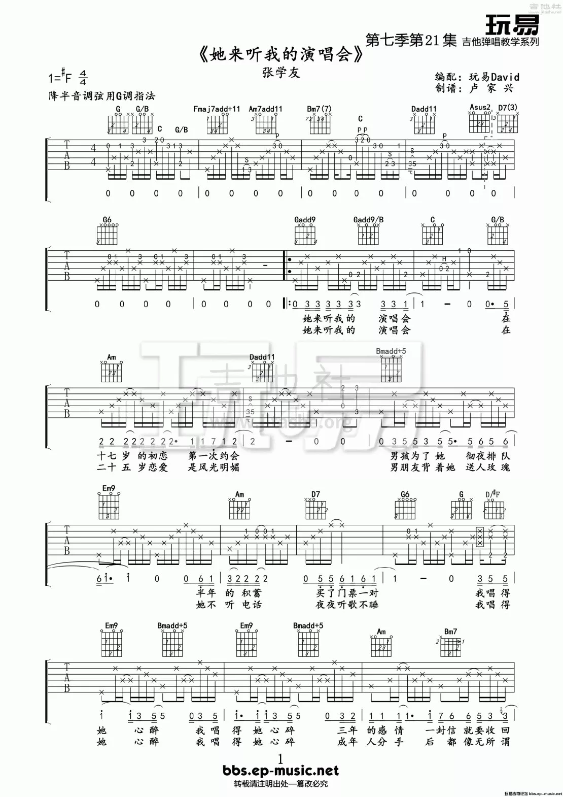
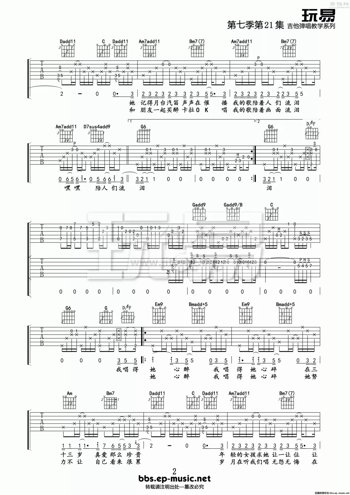
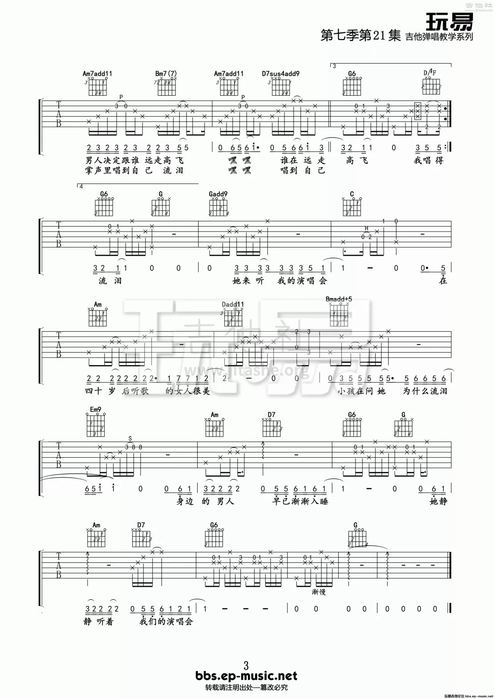

1 弹唱
1.1 他来听我的演唱会
  
1.2 虚拟
作曲 : 陈粒 作词 : 陈粒 前奏 D-9 C∆9 D-9 C∆9 D-9 C∆9 固执押韵的排比 固执幼稚的押韵 Em Am7 零零散散凑齐了阵营 D-9 C∆9 固执美丽的意义 固执空洞的美丽 Em A7 飘飘然然空中遇见你 F 你是我未曾拥有无法捕捉的亲昵 G 我却有你的吻你的魂你的心 Em Am 载着我飞呀飞呀飞 越过了意义 F 你是我朝夕相伴触手可及的虚拟 G 陪着我像纸笔像自己像雨滴 Em Am D-9 C∆9 看着我坠啊坠啊坠落到云里 鼓加入 D-9 C∆9 固执有趣的零星 固执无聊的有趣 Em Am7 平平淡淡管住了情绪 钢琴加入 D-9 C∆9 固执声音的意义 固执空洞的声音 Em Am7 摇摇晃晃情绪却满溢 Bass加入 F 你是我未曾拥有无法捕捉的亲昵 G 我却有你的吻你的魂你的心 Em Am 载着我飞呀飞呀飞 越过了意义 F 你是我朝夕相伴触手可及的虚拟 G 陪着我像纸笔像自己像雨滴 Em Am D-9 C∆9 看着我坠啊坠啊坠落到云里 Bass Solo F 你是我未曾拥有无法捕捉的亲昵 G 我却有你的吻你的魂你的心 Em Am 载着我飞呀飞呀飞 越过了意义 F 你是我朝夕相伴触手可及的虚拟 G 陪着我像纸笔像自己像雨滴 Em Am D-9 C∆9 看着我坠啊坠啊坠落到云里
D-9 2 4 1 3
C∆9 1 3 7 2
1.3 我在人民广场吃炸鸡
1=D
INTRO: Em7 A7 D∆ B7 Em7 A7 D∆ B7
Em7
A7 D∆ B7 Em7
最近你变得很冷漠 让我有些不知所措
其实我没期待太多 你能像从前般爱我
只是连约会你都逃脱 什么解释都不说
Em7 A7 D∆ B7
不是我不知道 爱情需要煎熬
不是我没祈祷 你只是……迟到
Em7 A7 D∆ B7
我在人民广场吃着炸鸡 而此时此刻你在哪里
虽然或许你在声东击西 但疲倦已让我懒得怀疑
我在人民广场吃着炸鸡 而此时此刻你在哪里
Interlude: Em7 A7 D∆ B7 x2
A7 D∆ B7 Em7
最近你变得很冷漠 让我有些不知所措
其实我没期待太多 你能像从前般爱我
只是连约会你都逃脱 什么解释都不说
Em7 A7 D∆ B7
不是我不知道(爱妾) 爱情需要煎熬
不是我没祈祷 你只是……迟到
Em7 A7 D∆ B7
我在人民广场吃着炸鸡 而此时此刻你在哪里
虽然或许你在声东击西 但疲倦已让我懒得怀疑
我在人民广场吃着炸鸡 而此时此刻你在哪里
Em7 A7 D∆ B7
不是我不知道 爱情需要煎熬
不是我没祈祷 啊
Em7 A7 D∆ B7
我在人民广场吃着炸鸡 而此时此刻你在...
而此时此刻你在... 而此时此刻你在...
Em7 A7 D∆ B7
我在人民广场吃着炸鸡 而此时此刻你在...
1.4 儿时
1=A
(每一个和弦都是8拍)
INTRO: A2 #Fm7 Bm7 Esus4
A2 #Fm7 Bm7 Esus4
铁道旁赤脚追晚霞 玻璃珠铁盒英雄卡 玩皮筋迷藏石桥下 姥姥又纳鞋坐院坝
铁门前篮框银杏花 茅草屋可有住人家 放学路打闹嘻嘻哈 田埂间流水哗啦啦
(第二把吉他进入, 加入泛音, 男生和声)
A2 #Fm7 Bm7 Esus4
我们就一天天长大 甜梦中大白兔黏牙 也幻想神仙科学家 白墙上泥渍简笔画
Fsus4 Bb2
我们就一天天长大 四季过老梧桐发芽 沙堆里有宝藏和塔 长板凳搭起一个家
Interlude: 钢琴
A2 #Fm7 Bm7 Esus4
日子总慢得不像话 叶落满池塘搬新家 二十寸彩电皮沙发 五点半大风车动画
晚饭后纳凉星夜下 萤火虫微风弯月牙 大人聊听不懂的话 鬼怪都躲在床底下
(加入女孩的和声, Bass, 扫弦)
A2 #Fm7 Bm7 Esus4
我们就一天天长大 记忆里有雨不停下 蝉鸣中闷完了暑假 新学年又该剪头发
我们就一天天长大 也开始憧憬和变化 曾以为自己多伟大 写了诗不敢递给她
A2 #Fm7 Bm7 Esus4 A2
我们就一天天长大 听磁带偶遇榕树下 白衬衫黄昏木吉他 年少不经事的脸颊
Outro: 呜呜...(8个8拍)
Bm7 A2 #Fm7 Bm7 Esus4
还以为自己多伟大 写了诗不敢递给她 小小诗不敢递给她 呜
小小诗不敢递给她
1.5 七楼
原调Gm, 降低 1Key, 使用Am调
1=Am
歌手：陈粒
Dadd2 . C∆ . Dadd2 . C∆ .
让我尝一口叫瞎想的毒酒 让我迷恋徒有其表的干吼
F . C∆ .
让我一声不吭在无言里担忧
E/B E Am .
被诅咒太内疚
Dadd2 . C∆ . Dadd2 . C∆ .
让我喝一杯叫空想的毒酒 让我沉醉不切实际的引诱
F . C∆ .
让我不能自拔在春梦里温柔
E/B E Am .
被庇佑永不朽
F C∆ E Am
然后再一丝不苟求救 看透只是逢场作秀
F C∆ E Am
以后每个忘时夜昼 怀着歉疚算旧怨新仇
Dadd2 . C∆ . Dadd2 . C∆ .
让我干一杯叫臆想的毒酒 让我耽溺早有预谋的邂逅
F . C∆ .
让我一败涂地在美景里扮丑
E/B E Am .
被拱手再奢求
Dadd2 . C∆ . Dadd2 . C∆ .
让我舔一滴叫妄想的毒酒 让我贪婪醉生梦死的七楼
F . C∆
让我不顾一切让我能好受
E/B E Am .
被享受会好受
F C∆ E Am
然后再忐忑不安念头 看透没谁能够感同身受
F C∆ E Am
以后若心有不甘逗留 难说有天我说走就走
Dadd2 . C∆ . Dadd2 . C∆ .
让我舔一滴叫做妄想的毒酒 让我贪婪醉生梦死的七楼
F . C∆
让我不顾一切让我能好受
E/B E Am .
被享受会好受
节奏
D2: 2 3 6
1.6 不灭
作曲 : 陈粒
作词 : 王舒
Am E
如果死后所有人与所有人相见 那么死亡还有什么魅力可言
Am E F
如果拒绝一条路和一条路重叠 那么相见才会值得认真说再见
C E Am
缠绵 翩跹 蔓延
Am E
如果不想上半生和下半生分界 那么同意你离开只是场戏言
Am E F
如果选你和我与我和她的分别 那么选择还有什么范畴可争辩
C E Am
捏碎 焚毁 飞
Am E Am E
你揉皱是我一纸青山碧水的理想 我煎熬是谁一碗绕指缠绵的糖
F C E Am
山河破碎 糖水焦黑 你不会
间奏...
Am E
如果不想上半生和下半生分界 那么同意你离开只是场戏言
Am E F
如果选你和我与我和她的分别 那么选择还有什么范畴可争辩
C E Am
捏碎 焚毁 飞
Am E Am E
你揉皱是我一纸青山碧水的理想 我煎熬是谁一碗绕指缠绵的糖
F C E Am
山河破碎 糖水焦黑 你不会
Am E Am E
你谋划是你一场翻云覆雨的思量 我痛饮是我半晌风平浪静的紧张
F C E Am
云散雨干 风逐浪打 我绝对
Am E
如果死后所有人与所有人相见 那么离别还有什么危险可言
Am E F
如果拒绝一条路与一条路重叠 那么再会只是自顾自言的商榷
C E Am
你去 我等 不灭
1.7 The Long Way Round
1=F 变调夹五品, 使用C调 Am F C E (VIm IV I III) Am F C E Am F C E tell me what is going on inside your mind Am F C E the more i know the less i understand these times Am F C E i saw a man in my troubled dreams Am F C E he told me things that i could not foresee Am F C E your road is a song so carry on and do right F Gsus4 i wonder why i still try 鼓进入 Am F C E oh oh i take the long way round and Am F C E Am F G oh oh and it’s never straight or short in my life but you are still around Am F C E Am F C E 小提琴进入 Am F C E good to go but i have never left the ground Am F C E wanna lose some gravity to float just like a cloud Am F C E and all this time i just carry on Am F C E i keep the faith that my time will come Am F C E can’t fight the tide but i’m ready to jump in F F G G any time i’ll be all right Am F C E oh oh i take the long way round and Am F C E Am F G oh oh and it’s never straight or short in my life but we are still around F G Am E7 so don’t you feel like running down my skies F G Am E7 it’s just no use F G Am E7 I play this game it changes every time F G Am E7 it’s all i know Am F C E Am F C E F F G G Am F C E oh oh i take the long way round and Am F C E oh oh i am still around and Am F C E oh oh running upside down and Am F C E Am F G oh oh and it’s never straight or short in my life F F G G but i am still around yeah i am still around Am F C E Am F C E
1.8 正趣果上果
变调夹一品 前奏 C Am F G C Am F G C C G Am Em/B F G C 你佩桃木降妖剑 他会一招不要脸 C G Am Em/B F G C 哇呀呀呀 输在没有钱 输在没有钱 C G Am Em/B F F G G 你愿终老不羡仙 谁料温柔终老空了长生殿 C G Am Em/B F G C 哎唏唏唏 败给好容颜 败给好容颜 间奏 C Am F G C Am F G C C G Am Em/B F G C 心怀啮雪大志愿 被人称作小可怜 C G Am Em/B F G C 呜呼呼呼 突样未成年 突样未成年 C G Am Em/B F F G G 本欲歃血定风月 乌飞兔走光阴只负尾生约 C G Am Em/B F G C 噫嘘嘘嘘 真心怕火炼 真心也怕火炼 F F G G Dm G C 人生在世三万天 趣果有间孤独无解 F F C C F G C 苦练含笑半步癫 那我去给你煮碗面 F F G G Dm G C 是非对错二十念 十方观遍庸人恋阙 F F C C F G C 自学睡梦罗汉拳 吓冇知酱紫好危险 F G C 吓冇知酱紫好危险
1.9 PONY
陈粒 1=A 变调夹2品, 使用G调 前奏 Em G C G closing my eyes I'm getting high again and again step out the line float in the air I'm getting tired to follow the world I've been tried like the stupid sun, I shine like a foolish man, I write like a human being, I lie like a placid lake, I'm dried 鼓进入 间奏 Bass进入 I've been in love I used to laugh with the laughter now they're far I met a girl I opend the jar I want to restart but it's so hard like a child to ask you why like a friend to say I'm fine like a cat I keep being quiet like a dream of yours I die. 钢琴进入 间奏 closing my eyes I'm getting high again and again step out the line float in the air I'm getting tired to follow the world I've been tried like the stupid sun, I shine like a foolish man, I write like a human being, I lie like a placid lake, I'm dried F D7/F Look back on all the way everything was a waste F C G everyone was mistake F D7/F what if we skip the tale what if we get there straight F C G that'll really make my day 间奏(人声哼唱) (和声进入) I've been in love I used to laugh with the laughter now they're far I met a girl I opend the jar I want to restart but it's so hard like a child to ask you why like a friend to say I'm fine like a cat I keep being quiet like a dream of yours I die. like the stupid sun ,I shine like a foolish man ,I write like a human being ,I lie like a placid lake ,I'm dried
1.10 Fly Me to the Moon
1=C Fly me to the moon And let me play among the stars 让我在群星之间嬉戏 Let me see what spring is like 感受春天的美丽 On Jupiter and Mars 在木星和土星之上的气息 In other words, hold my hand 换言之 请我紧握的手 In other words, baby, kiss me 换言之 亲爱的 让我们忘情拥吻 Fill my life with song 用歌声装点心灵 And let me sing for ever more 让歌声伴我生活 You are all I long for 你是我心心念念的渴望 All I worship and adore 我的敬仰和我的爱 In other words, please be true 换言之 让我们坦诚相待 In other words, I love you 让我告诉你 我爱你 Fill my life with song 用歌声装点心灵 Let me sing for ever more 让歌声伴我生活 You are all I long for 你是我心心念念的渴望 All I worship and adore 我的敬仰和我的爱 In other words, please be true 换言之 让我们坦诚相待 In other words 让我告诉你 I love ... you 我爱你
1.11 SweetHeart
2 指弹
2.1 雨の日はワルツを踊って
2.2 あの日の帰り道
2.3 It Could Have Been
2.4 Moon River
2.5 夜香花
2.6 Manha do Carnaval
2.7 Twisted in My Sobriety
2.8 一生所爱
2.9 感
2.10 Kiss
2.11 Omens of Love
2.12 如果我不是我
变调夹 3品 C调
前奏
F24(F A D G) Em7 Dm7 Cmaj7
F24(F C D A) Em7 Dm7 C69
C G
如果我不是我 如果鱼儿也能歌唱
F G C
我一定会陪在你身旁 不让你忧伤
C G
如果我不是我 如果树木也能飞翔
F G C C7
我一定会陪在你身旁 不让你受伤
# 这里就是 4536251 的套路了
F G Em Am
别难过我亲爱的姑娘 别让我的世界黯淡无光
Dm7 G C C7
我多想让你靠在我的肩膀 可是我不能这样
F G Em Am
因为我还是我 就像石头无法绽放
Dm7 G C4 C
所以我只能远远望着你 同你一起悲伤
F G Em Am
别难过我亲爱的姑娘 别让我的世界黯淡无光
Dm7 G C C7
我多想让你靠在我的肩膀 可是我不能这样
F G Em Am
我多想吻去你脸上的泪水 替你抚平你所受的创伤
Dm7 G C4 C
可是我不能这样 不能这样
C G
如果我不是我 如果鱼儿也能歌唱
F G C
我一定会陪在你身旁 不让你忧伤
C G
如果我不是我 如果树木也能飞翔
F G C
我一定会陪在你身旁 不让你受伤
Dm7 G Fm C
如果我不是我 又会怎样
2.13 一诺抖音(1625)
2.14 一诺抖音(6251)
2.15 一诺抖音(蒲公英的约定)
变调夹4品 的 C 调
2.16 一诺抖音(爱在西元前)
变调夹2品 的 G 调
2.17 一诺抖音(红色高跟鞋)
变调夹2品 的 C 调
注意里面一些滑弦的音和每次拍弦(一般都是在第二拍)的音
2.18 一诺抖音(第一集)
注意律动
2.19 一诺抖音(blues)
注意律动, 并在第三拍需要拍弦
2.20 一诺抖音(稻香)
变调夹三品, A调, 类似于 卡农 的那个套路 1563251
2.21 一诺B站(易燃易爆炸)
3 Blues
3.1 IntroductionBlues-Example8
3.2 IntroductionBlues-Example10
4 Jazz
...